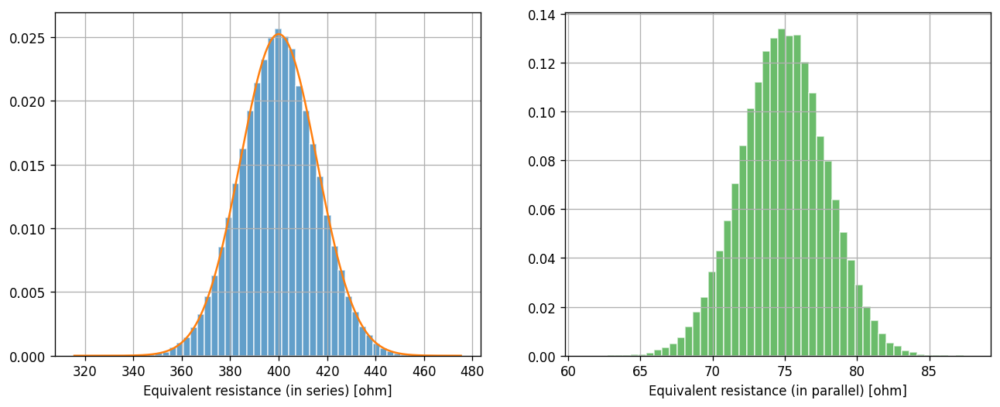
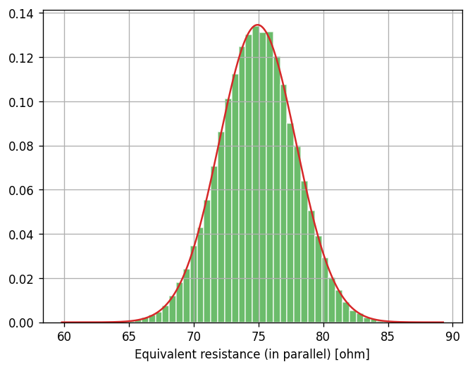

Lab 2: Summary Statistics#
For the class on Monday, January 13th
A. Two Resistors#
You have two resistors. Based on their color code bands, one has a resistance of 100 ohms and the other 300 ohms. Both resistors have a tolerance of 5%.
We can consider the actual resistance of these two resistors as random variables. Because the tolerance is quite small in this case, we can model the resistance as just normal (Gaussian) random variables. Note that this is not always a good assumption, especially if the tolerance is large. (Why? A resistance value should always be positive, but a normal random variable can take negative values!)
For now, let’s model resistance of our first resistor as \(X \sim \mathcal{N}(\mu=100, \sigma=5) \) and the second resistor as \(Y \sim \mathcal{N}(\mu=300, \sigma=15) \) (all numbers are in the unit of ohms). Let’s further assume that \(X\) and \(Y\) are independent.
📝 Questions:
Given the above model, answer the following questions with brief justification to your answers.
If we put these two resistors in series, the expected value of their equivalent resistance would be 400 ohms. True or false?
If we put these two resistors in parallel, the expected value of their equivalent resistance would be 75 ohms. True or false?
If we use a multimeter to measure the resistance of the first resistor, and repeat the measurement 100 times, what would approximately be the standard deviation among these 100 measurements? (A) 5 ohm, (B) 0.5 ohm, (C) 0.05 ohm, or (D) we don’t know.
Note: In Part B, you will see the answers to Questions 1 and 2. If you find your answers incorrect, do not edit your answers here. Instead, put an explanation near the end of Part B. You will still get full credit for this part if you can explain why your answers were incorrect.
// Add your answers here
B. Theoretical Calculation and Simulation#
The equivalent resistance when the two resistors are in series is \(X + Y\). Recall that in our model, we assume \(X\) and \(Y\) are both normal random variables and they are independent. These assumptions allows us to easily calculate the distribution of \(X + Y\), because the sum of two independent normal random variables is also normal, with the new mean being the sum of the means and the new variance being the sum of the variances. As such, we have:
In the parallel case, the equivalent resistance is \(XY/(X + Y)\). Here the multiplication and division make it difficult to calculate the full distribution of \(XY/(X + Y)\) analytically, because one cannot exchange the expectation operator with multiplication or division. In this case, creating a simulated sample to approximate the distribution is a good approach.
Below, we are going to simulate the equivalent resistance for both cases (in series and in parallel). For the serial case, we will compare the simulated sample with the theoretical distribution that we calculated. For the parallel case, we don’t have a theoretical distribution to compare with, but we can use the simulated sample to estimate the expected value of \(XY/(X + Y)\).
import numpy as np
import scipy.stats
import matplotlib.pyplot as plt
n_trials = 100000
rng = np.random.default_rng(123)
X = scipy.stats.norm(loc=100, scale=(100*0.05)).rvs(n_trials, random_state=rng)
Y = scipy.stats.norm(loc=300, scale=(300*0.05)).rvs(n_trials, random_state=rng)
R_serial = X + Y
R_parallel = X * Y / (X + Y)
R_serial_true_mean = 100 + 300
R_serial_true_std = np.hypot(100*0.05, 300*0.05) # hypot(a, b) = sqrt(a**2 + b**2)
R_serial_true_dist = scipy.stats.norm(loc=R_serial_true_mean, scale=R_serial_true_std)
fig, ax = plt.subplots(ncols=2, figsize=(13, 4.8), dpi=120)
ax[0].hist(R_serial, bins=50, density=True, alpha=0.7, edgecolor="w", color="C0")
x = np.linspace(*ax[0].get_xlim(), num=1001)
ax[0].plot(x, R_serial_true_dist.pdf(x), color="C1")
ax[0].grid(True)
ax[0].set_xlabel("Equivalent resistance (in series) [ohm]")
ax[1].hist(R_parallel, bins=50, density=True, alpha=0.7, edgecolor="w", color="C2")
ax[1].grid(True)
ax[1].set_xlabel("Equivalent resistance (in parallel) [ohm]");

On the left panel (for the serial case), we can see that the simulated sample (histogram) looks like a great match to the theoretical distribution (curve) that we derived earlier.
While we don’t have a theoretical distribution for the parallel case (right panel), the left panel should give us some confidence that our simulated sample is a good approximation of the true distribution.
If the simulated sample is a good approximation of the true distribution, then the average of the simulated sample should also be a good approximation of the mean (expected value) of the theoretical distribution. Recall that the former is a realization of a random variable (and it would change if we change the random seed we used in our simulation), while the latter has a deterministic value.
Let’s print out the average of the simulated samples for both the serial and parallel cases.
print("Average of the simulated sample (serial case):", R_serial.mean(), "ohm")
print("Average of the simulated sample (parallel case):", R_parallel.mean(), "ohm")
Average of the simulated sample (serial case): 399.9463233580371 ohm
Average of the simulated sample (parallel case): 74.92951763861521 ohm
For the serial case, we know the true expected value is 400 ohms. The simulated value is not exactly 400 ohms, but is it considered close? The answer is yes, and we will learn how to quantify this in the next lab.
For the parallel case, the average of the simulated sample is not quite 75 ohms. One might wonder if the difference is also just a statistical fluctuation. It turns out, the true expected value of the equivalent resistance for the parallel case is not 75 ohms.
While calculating the full distribution of \(XY/(X + Y)\) is challenging, we can, however, find good approximations of the true mean and variance of \(XY/(X + Y)\) using Taylor expansions because the variance of \(X\) and \(Y\) are small in our case.
For the mean (expected value), we have:
For the variance, we have:
Note that the formula for the variance approximation is actually how we do the propagation of uncertainty.
If you carefully follow these two formulas, you will find the approximated mean and variance of \(XY/(X + Y)\) in our case to be:
Let’s see if these approximations provide us a good description of the theoretical distribution of \(XY/(X + Y)\) that matches our simulated sample.
R_parallel_approx_mean = 75 - 25/2 * 9/3200 - 225/2 * 1/3200
R_parallel_approx_std = np.hypot(5*9/16, 15/16)
R_parallel_approx_dist = scipy.stats.norm(loc=R_parallel_approx_mean, scale=R_parallel_approx_std)
fig, ax = plt.subplots( dpi=120)
ax.hist(R_parallel, bins=50, density=True, alpha=0.7, edgecolor="w", color="C2")
x = np.linspace(*ax.get_xlim(), num=1001)
ax.plot(x, R_parallel_approx_dist.pdf(x), color="C3")
ax.grid(True)
ax.set_xlabel("Equivalent resistance (in parallel) [ohm]");

📝 Questions:
If your answers to Question 1 in Part A were incorrect, explain why they were incorrect based on what you learned in Part B.
In the code above, both
R_parallel.mean()andR_parallel_approx_meanare some forms of approximation of the expected value of \(XY/(X + Y)\). Briefly explain how these two forms of approximation differ. In particular, for each of the two forms, describe in what limit the approximation would approach the true value.
// Add your answers here
C. Correlation#
Consider the same setup as in Part A, but that the two resistors come from the same batch during manufacturing, and their deviations from the labelled resistance values are positively correlated.
In other words, \(X\) and \(Y\) are still the normal random variables as before, but now they are positively correlated instead of being independent.
📝 Questions:
Consider the equivalent resistance when the two resistors are in series. Answer the following questions with brief justification to your answers.
The expected value of the equivalent resistance would be (a) greater than, (b) less than, or (c) equal to 400 ohms.
The standard deviation of the equivalent resistance would be (a) greater than, (b) less than, or (c) equal to \(\sqrt{5^2+15^2}\) ohms.
// Add your answers here
Let’s now check the answers to the above questions using simulation. Like before, if you find your answers incorrect after seeing the simulation result, do not edit your answers above. Instead, put an explanation after the simulation. You will still get full credit for this part if you can explain why your answers were incorrect.
Let’s assume the correlation between \(X\) and \(Y\) is \(\rho_{X,Y}=0.8\). The covariance between \(X\) and \(Y\) is then \(\mathrm{Cov}(X, Y) = \sigma_X \sigma_Y \rho_{X,Y} = 5 \times 15 \times 0.8 = 60\).
We can now generate a collection of samples for \(X\) and \(Y\) from a multivariate Gaussian distribution.
Xc, Yc = scipy.stats.multivariate_normal(mean=[100, 300], cov=[[25, 60],[60, 225]]).rvs(n_trials, random_state=rng).T
R_serial_c = Xc + Yc
As we discussed, the simulated R_serial_c is a collection of samples (not a distribution),
but it can serve as a good approximation of the true distribution of \(X+Y\).
Hence, the sample average and the sample standard deviation are also good approximations of true mean and standard deviation.
⚠️ Task: Print out the sample average and the sample standard deviation of R_serial_c.
# Add your code here
📝 Questions: Did you make the right predictions earlier? If not, explain why you didn’t get them right.
// Add your answers here
Tip
Submit your notebook
Follow these steps when you complete this lab and are ready to submit your work to Canvas:
Check that all your text answers, plots, and code are all properly displayed in this notebook.
Run the cell below.
Download the resulting HTML file
02.htmland then upload it to the corresponding assignment on Canvas.
!jupyter nbconvert --to html --embed-images 02.ipynb